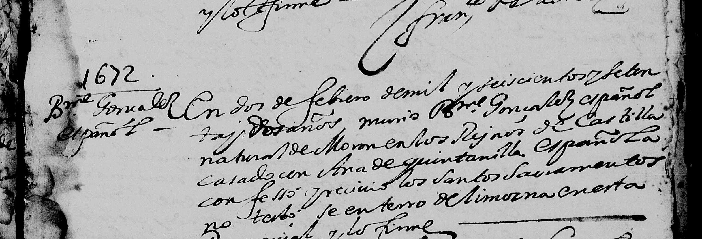
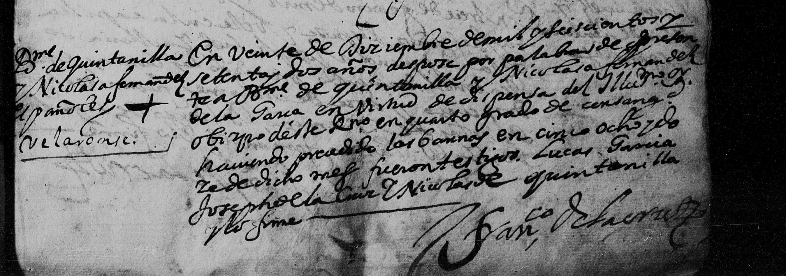
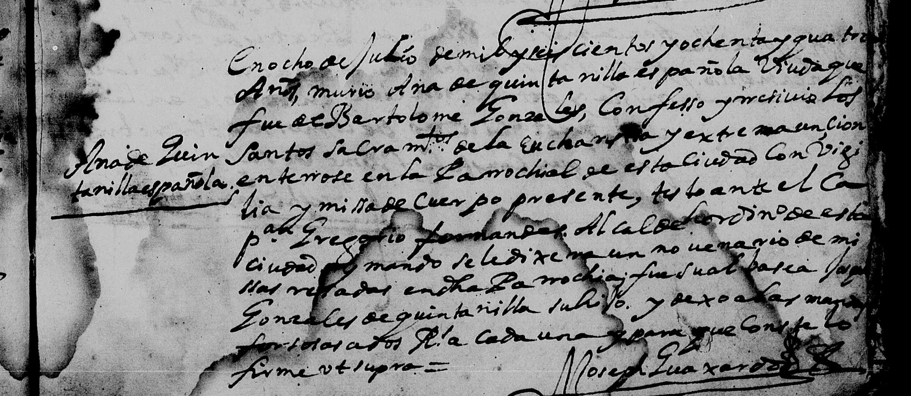
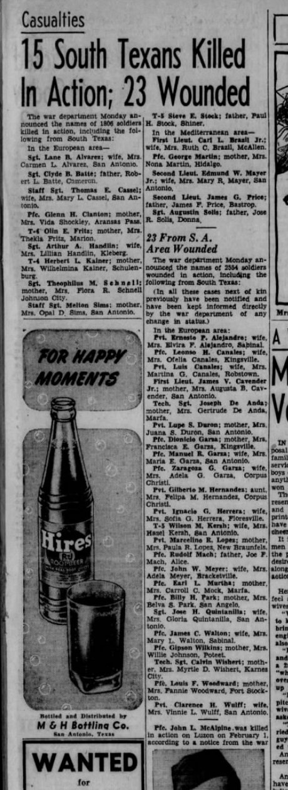
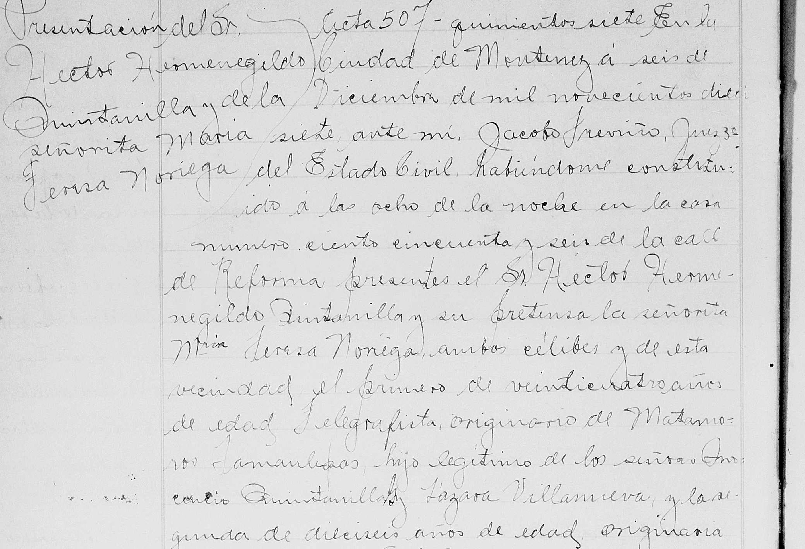
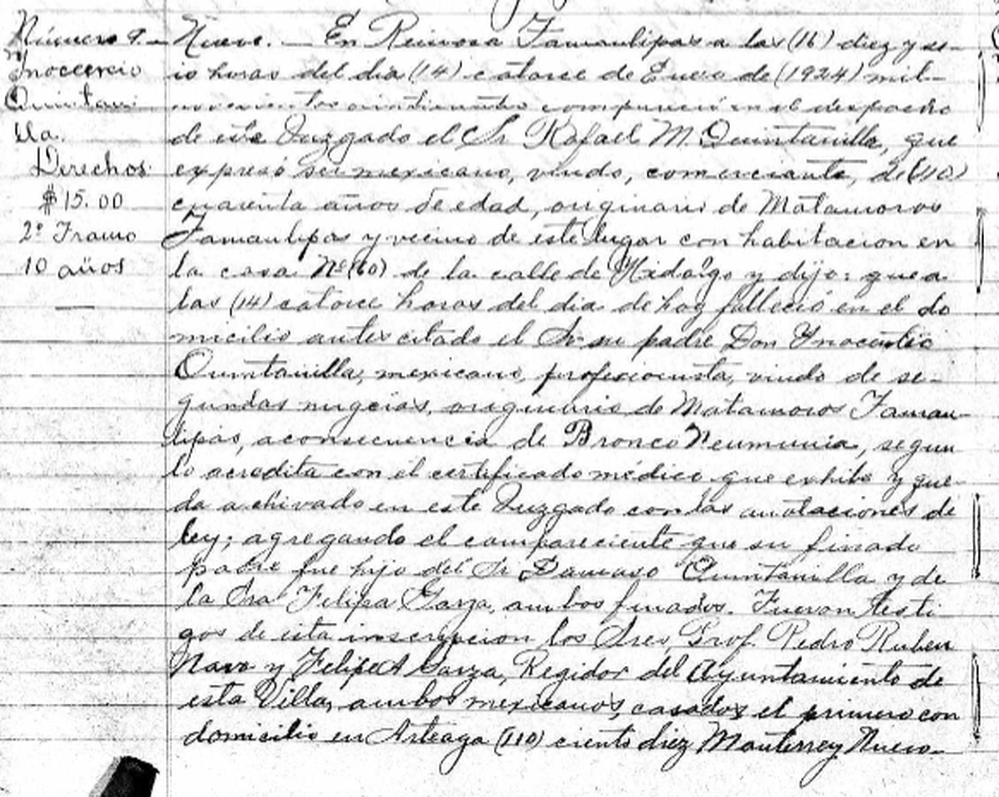
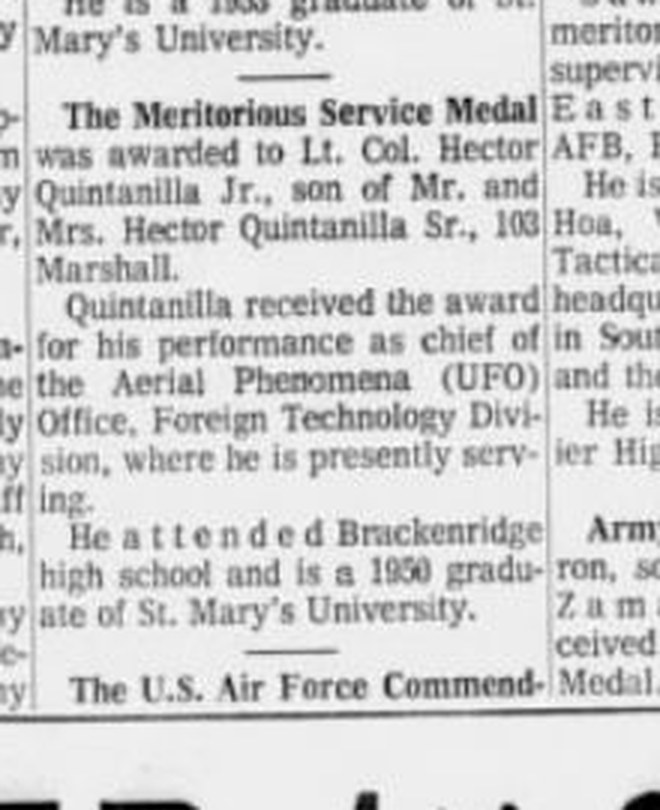
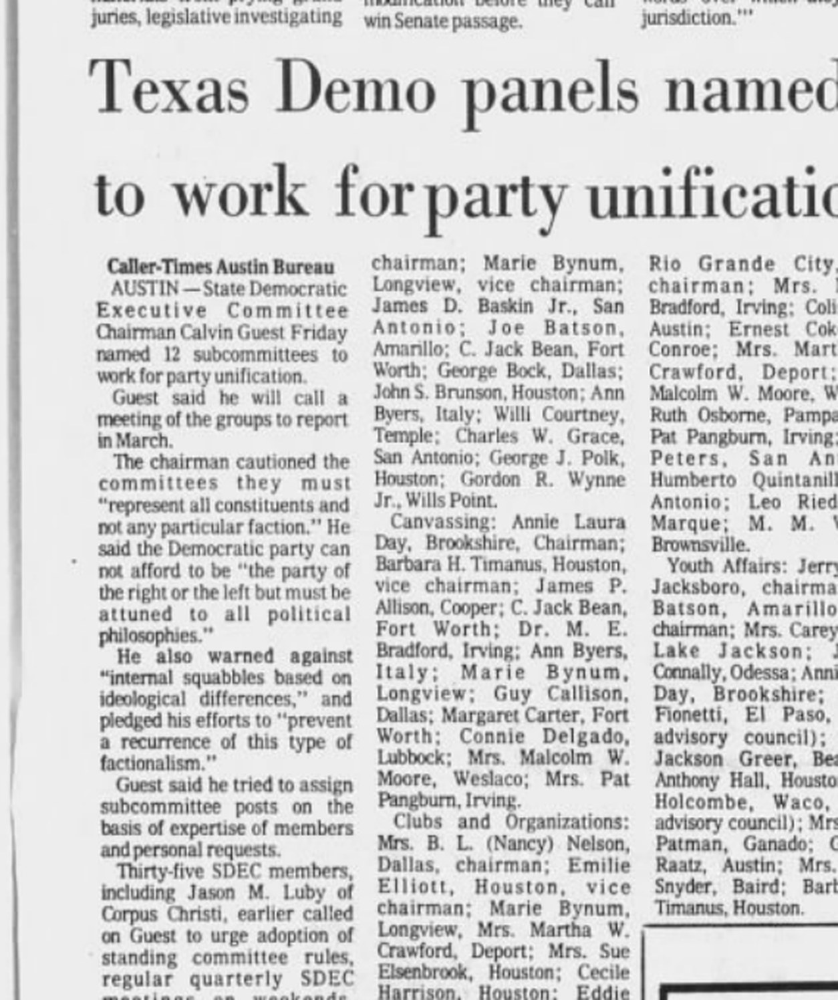
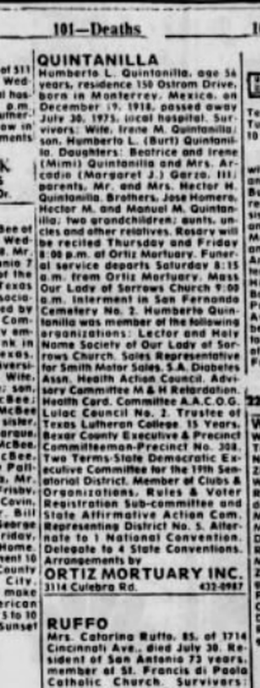

<meta charset="utf-8">
<meta name="viewport" content="width=device-width, initial-scale=1">
<meta name="robots" content="noindex">
<title>Quintanilla: Monterrey 1596</title>
<link rel="stylesheet" href="style.css">

<nav>
  <a href="index.html">Home</a>
  <a class="here" href="quintanilla.html">Quintanilla</a>
  <a href="martinez.html">Martinez</a>
  <a href="flynn.html">Flynn</a>
  <a href="maccoll.html">MacColl</a>
</nav>

<main>
<h1>Quintanilla</h1>
<p class="sub">My mother's father's line, and the deepest reach in the family: proven on records into the 1700s, and on well-worked ground back to the 1596 founding of Monterrey.</p>

<h2>The founding of Monterrey</h2>
<p>On September 20, 1596, a dozen families rode into a valley in northern Mexico and signed a charter founding a city they called Monterrey. Today it's one of the biggest cities in Mexico. The twelve founders' names are written on the charter, and being descended from one of them is a documented, checkable thing, the Mexican equivalent of Mayflower descent.</p>

<p>One of the twelve was <strong>Captain Lucas García</strong> <span class="badge proven">Proven</span>. He's not obscure. The chronicles call him "El Bueno," the good one, and "el Capitán de la Paz," the captain of peace, because he spoke the language of the local Huachichil people and kept the peace with them as the settlement's interpreter. He settled the land that is now the city of Santa Catarina, next door to Monterrey, and served repeatedly as a town official from 1599 until about 1630, when he died. His wife was <strong>Juliana de Quintanilla</strong>, who outlived him by nearly forty years and died in 1667.</p>

<p>Our family tree claimed we descend from this man. That's exactly the kind of claim that usually falls apart when you test it, somebody centuries later saw a matching surname and grafted their line onto a famous one. So we tested it.</p>

<p>It held <span class="badge probable">Probable</span>. Two independent Mexican sources, including a list derived from Israel Cavazos Garza, the dean of Nuevo León genealogy, name the founder couple's ten children. One of them is <strong>Ana</strong>, recorded under both her names, "Ana García" from her father and "Ana de Quintanilla" from her mother, married to Bartolomé González. That's our ancestor, matched on both name forms and the right husband. Not a surname coincidence, an actual documented daughter.</p>

<h2>Why we're called Quintanilla and not García</h2>
<p>Here's the part I find wild: the surname came down through women. Spanish naming in that era was flexible, kids could take the father's name, the mother's, or a grandparent's. Ana used her mother Juliana's name, Quintanilla. Ana's husband was <strong>Bartolomé González de Olivares</strong>, an immigrant from Morón de la Frontera in southern Spain, born about 1615, who arrived in Monterrey around 1645, mined in the Valle de las Salinas, served as mayor of Monterrey in 1648, and died in 1672 <span class="badge probable">Probable</span>. Their children fused the two names into "González de Quintanilla," and over the generations the González fell away. The name survived because a daughter's line carried it.</p>

<p>And there's a twist further back, one I had checked hard, because a "we're secretly Sephardic" story is exactly the kind of thing families romanticize. It knots at Juliana de Quintanilla, the founder's wife. Her father was <strong>Captain Juan de Farías, "El Portugués,"</strong> a Portuguese man, mayor of Saltillo in 1615 <span class="badge proven">Proven</span>. And her mother's line runs back to the <strong>Alcocer family of Seville</strong>, who are named in a scholarly study of that city's Inquisition records as <strong>conversos</strong>, Jews forced to convert to Catholicism, from Seville's old Jewish quarter, reconciled by the Inquisition with their property seized around 1501. Monterrey's founders famously included many such conversos, who came to the far northern frontier partly to get out from under the Inquisition, and my line sits in that community <span class="badge probable">Probable</span>.</p>

<p>The honest grading matters here, because the compelling parts and the documented parts aren't the same parts. The one genuinely <em>documented</em> converso family is that Seville Alcocer line, real, and cited in the Inquisition scholarship, not lore. But the paper trail connecting it down to Juliana has a weak joint I can't yet close. And the more romantic threads, that the founder's own father was a crypto-Jewish Portuguese named Castaño de Sosa, that Juan de Farías was himself secretly Jewish, are plausible only because of the converso-heavy colony they belonged to; no Inquisition record actually names them as Jews. So: probably real Sephardic ancestry, better grounded than most such family stories, but not proven. And DNA won't settle it, this far back a single line washes out below what a test can detect. What would prove it is a colonial will or dowry bridging that one missing generation.</p>

<h2>Three hundred years in Mexico, then Texas</h2>
<p>The family stayed in northern Mexico for three centuries, in Monterrey and later in the river towns along the Rio Grande. My grandfather <strong>Manuel Quintanilla</strong> and his brothers were born in Mexico; their father Hector Sr. went ahead to San Antonio and the rest of them followed him across the bridge at Laredo in November 1929. I used to say Hector Sr. was an American citizen born in Texas. That turns out not to be true, and the real version is further down this page.</p>

<p>Here's the part I'm proudest of, because it went the honest way and came out right. At first I could only mark the link between my recent family and that colonial pedigree as unproven, an honest "family claim," because a compiled-tree check couldn't confirm it. So I went into the actual Mexican church and civil registers, and the whole weld is there, record by record. My great-grandfather <strong>Hector</strong>'s 1917 civil marriage in Monterrey names his father as <strong>Inocencio Quintanilla</strong>. Inocencio's 1897 church marriage in Matamoros names his father as <strong>Dámaso Quintanilla</strong>. And Dámaso's own christening, 12 December 1813 at China, Nuevo León, names his parents as <strong>José Antonio Encarnación Quintanilla and María Úrsula Longoria</strong>, the top of the colonial line. Three generations, three primary records, each one naming the next father up <span class="badge proven">Proven</span>.</p>

<p>So how far does it actually hold? <strong>Proven, on the original register images, back to José Antonio Encarnación Quintanilla, born 1767</strong>, Dámaso's father. I pulled and read all three recent records myself, not just their transcriptions: Hector's 1917 marriage in Monterrey, Inocencio's 1897 marriage in Matamoros, and Dámaso's 1813 baptism in China. From José Antonio up to the 1596 founders is five more generations, and when I first wrote this page that stretch was a blank I was taking on other researchers' word. It isn't anymore, and the two ends of it are now proven on the page as well. Working up: <strong>Francisco Miguel Quintanilla Treviño</strong>, christened in Monterrey 14 October 1731, married Susana Cantú Guajardo at Montemorelos 23 April 1766 <span class="badge probable">Probable</span>, his baptism indexed off the cathedral book with Antonio de Quintanilla and María Treviño as parents. His father <strong>Antonio González de Quintanilla</strong>, born Monterrey 2 October 1684, died Cadereyta 27 January 1761, married Nicolasa Treviño Leal in Monterrey 17 July 1729 <span class="badge probable">Probable</span>. His father <strong>Alférez Real Bartolomé González de Quintanilla</strong>, who married Nicolasa Fernández de Tijerina in Monterrey cathedral on 20 December 1672 <span class="badge proven">Proven</span>, I've now read on the page, and it's below. And his parents, Captain Bartolomé González and <strong>Ana María García de Quintanilla</strong>, the founder's daughter, I have from both their burials, also below <span class="badge proven">Proven</span>. So: proven at the bottom to 1767, proven at the top from 1672 to 1684 with the founder's daughter named as the widow, and two middle rungs, Antonio and Francisco Miguel, that sit on indexed cathedral entries with images attached but not yet read by my own eye. The compiled trees had lost Dámaso when I started; the parish books had him the whole time, and here he is:</p>

<figure>
  
  <figcaption>The baptism, San Felipe de Jesús, China, Nuevo León, December 1813 (margin: "Damacio español de China"): the priest baptized "Damacio español... [hijo] de Don José Antonio Quintanilla y Doña María Úrsula Longoria," and named the grandparents too, Don Miguel Quintanilla and Doña Susana Cantú, Don Marcelino Longoria and Doña Francisca Serna. This is the weld to the colonial line, in the register itself. It was computer-indexed under a garbled "Damacio Espanl," which is why a name search never found it. <a href="documents/quintanilla-damaso-christening-full.jpg">Full page here.</a></figcaption>
</figure>

<h2>The other side of Dámaso: an Italian in the family</h2>
<p>The 1813 baptism above names Dámaso's mother's parents too, Don Marcelino Longoria and Doña Francisca Serna, and for a long time I treated that as a dead end. It isn't. It's a doorway into a completely different family. Marcelino Longoria married María Antonia Francisca Serna at Camargo on 30 May 1770, and a published descendancy of the Longorias, built by people who had never heard of us, carries his line straight back: Marcelino's father José Matías Longoria, born about 1722 at Cerralvo; his mother Clara María Chapa; and her grandfather, <strong>Juan Bautista Chapa</strong>.</p>

<p>Chapa was born <strong>Giovanni Battista Schiapapria</strong> in Albisola, a small town outside Genoa, Italy, in 1627. His parents sent him to Cádiz to study for the priesthood; at nineteen he got on a ship for the New World instead, shortened his surname to Chapa, and spent forty years as Royal Secretary to the governors of Nuevo León. He rode on the expeditions that hunted for La Salle's lost French colony on the Texas coast. And he wrote the <em>Historia del Nuevo Reino de León</em>, one of the founding sources for the history of northern Mexico and Spanish Texas, and published it anonymously, because he was afraid of what would happen if he signed it. Nobody knew who wrote it for 266 years. The man who finally worked it out in 1961, from clues in Chapa's own will, was Israel Cavazos Garza, the same historian I cite above for the founder's children. Chapa has his own entry in the Handbook of Texas. So, through Dámaso's mother, there is an Italian in the tree, and a famous one <span class="badge probable">Probable</span>.</p>

<p>Why I believe it: the bottom rung is my own record. Dámaso's baptism, which I read on the page, says his maternal grandparents were Marcelino Longoria and Francisca Serna. The Chapa descendancy, working down from the top with no knowledge of Dámaso, arrives at José Marcelino Longoria marrying María Antonia Francisca Serna. Same two names, from opposite directions. FamilySearch's own index calls their daughter "María Úrsula Longoria de la Serna" and her father "Marcelino Longoria Hinojosa," and Hinojosa is exactly the mother the Chapa tree gives him. The stretch from Marcelino up to Chapa is compiled and corroborated, not read on the page, so Probable is where it stays for now.</p>

<h2>The founder's daughter, in the cathedral's own book</h2>
<p>These three came out of the Monterrey cathedral registers on FamilySearch, and they turn the top of this line from other people's scholarship into something I've read myself. First, Bartolomé's burial, in the 1672 pages of the book of the dead:</p>
<figure>
  
  <figcaption>Catedral de Monterrey, Defunciones 1668–1752, under the year-heading 1672: "En dos de febrero de mil y seiscientos y setenta y dos años murió Bartolomé González, español, <strong>natural de Morón en los Reinos de Castilla</strong>, casado con <strong>Ana de Quintanilla</strong>, española; confesó y recibió los Santos Sacramentos; no testó; se enterró de limosna en esta Parroquial." Born in Morón, married to Ana de Quintanilla, buried as a charity case without a will. The Spain anchor, in the priest's hand. <a href="documents/bartolome-gonzalez-burial-1672.jpg">Full page here.</a></figcaption>
</figure>
<p>Ten months later his son married, and the entry says something the trees only hinted at:</p>
<figure>
  
  <figcaption>Catedral de Monterrey, Matrimonios 1667–1800, page 58: "En veinte de diciembre de 1672 desposé por palabras de presente a Bartolomé de Quintanilla y Nicolasa Fernández de la Garza, <strong>en virtud de dispensa del Ilustrísimo Sr. Obispo de este Reino en cuarto grado de consanguinidad</strong>… fueron testigos <strong>Lucas García</strong>, Joseph de la Cruz y <strong>Nicolás de Quintanilla</strong>." The bishop had to dispense them because they were cousins, which is exactly what two González-Hidalgo mothers would produce. His uncle Lucas García, the founder's son, and his brother Nicolás stood as witnesses. <a href="documents/quintanilla-tijerina-marriage-1672.jpg">Full page here.</a></figcaption>
</figure>
<p>And Ana herself, twelve years after that, with the whole family standing round the entry:</p>
<figure>
  
  <figcaption>Same book of the dead, 1684: "En ocho de julio de 1684 murió <strong>Ana de Quintanilla, española, viuda que fue de Bartolomé González</strong>… enterróse en la Parroquial de esta ciudad con vigilia y misa de cuerpo presente; <strong>testó ante el Capitán Gregorio Fernández, alcalde ordinario</strong>… fue su albacea <strong>Joseph González de Quintanilla, su hijo</strong>." She made a will before Gregorio Fernández de Tijerina, the town's alcalde that year and her son's father-in-law, and her executor was a son already calling himself González de Quintanilla. The founder's daughter, the widow of the man from Morón, and the surname, all in one entry. <a href="documents/ana-quintanilla-burial-1684.jpg">Full page here.</a></figcaption>
</figure>

<h2>The colonial web</h2>
<p>Once every rung had a name, I did what I hadn't been able to do before: follow the wives. In a colony of a few hundred people, every marriage is a door into another founding family, and behind most of those doors sits someone with a Wikipedia entry. All of this is the same grade as the chain above, <span class="badge probable">Probable</span>: tree profiles and published descendancies that agree with each other, not register pages I've read. But they agree remarkably well, and the shape of the story is not in doubt.</p>

<p><strong>Past 1596.</strong> Lucas García, the founder I've been calling our ancestor, turns out to be the founder's grandson. His mother was María Inés Rodríguez, the eldest daughter of <strong>Diego de Montemayor</strong>, the man who founded Monterrey on 20 September 1596 and served as its first alcalde. Montemayor was born in Málaga around 1528 and sailed from Seville on 17 December 1548; the passenger list survives, and reads "Diego de Montemayor, vecino de Málaga… lleva consigo a Inés Rodríguez, su mujer." He is also the man who, in 1581, ran his second wife through with his sword for her affair with the Portuguese captain Alberto del Canto, swore not to trim his beard until he'd had his revenge, and was cleared, because the law of the day allowed it. Lucas García's father was Baltasar Castaño de Sosa, a Portuguese "New Christian" who helped found Saltillo and was its alcalde in 1583. Lucas and his brother Diego Rodríguez rode into the Monterrey valley with their grandfather in 1596, and between them ran the town as alcalde eight times over the next thirty years. Bartolomé González, Ana's husband, was alcalde in 1648.</p>

<p><strong>Where the name comes from, one step further.</strong> Juliana Farías, the founder's wife, got "Quintanilla" from her own mother, María de Treviño Quintanilla, whose parents were Diego de Treviño and Beatriz de Quintanilla, a couple baptizing children in Mexico City in the 1560s. That couple matters more than their names suggest, because I kept running into them. Their daughter Juana married <strong>Marcos Alonso de la Garza y del Arcón</strong> of Lepe, in Huelva, the man every Garza in northern Mexico and Texas descends from, who came to Monterrey in 1596 with his wife and six sons. Two of those sons, Blas de la Garza Falcón and Alonso de Treviño, married two sisters, Beatriz and Anastacia González-Hidalgo Navarro of Saltillo. And I descend from both couples: Blas and Beatriz through the Tijerina wife of 1672, Alonso and Anastacia through the Treviño wife of 1729 and, separately, through the Cantú wife of 1766. Three of Diego de Treviño's children, three separate roads back to the same house.</p>

<p><strong>Two brothers from Morón.</strong> Bartolomé González's father was Juan Diego Olivares y González-Hidalgo, born in Morón de la Frontera in 1558 and married at Valladolid in 1597. Bartolomé had a brother: General Juan de Olivares, born in Monterrey in 1605, soldier, miner, landowner at Villa de Marín. Juan's daughter Beatriz is the girl who married the Italian, Juan Bautista Chapa, in 1653. So the Quintanilla line and the Chapa line on this page, which I found by two completely different routes, run back to two brothers in one Andalusian town.</p>

<p><strong>The rest of the cast.</strong> Captain Diego de Villarreal, who came to Nuevo León around 1625, founded the settlement of El Carmen in the Valle de las Salinas and was the first procurador of Cerralvo in 1643; his great-granddaughter married Antonio in 1729. Gregorio Fernández de Tijerina, a Basque from Durango in Biscay, buried in Monterrey in 1668, whose daughter married Bartolomé the younger in 1672. And the Cantús, who arrived around 1630 with a surname that isn't Spanish at all, almost certainly Cantù, near Como, in Lombardy, which would make a second Italian in the tree. There's a wrinkle there I'll flag and not oversell: the Y-DNA of one Cantú brother's descendants is a type common in the Levant and among Sephardic families. If our Cantú line runs through him, and the trees say it does, that's another converso thread. Unproven, and staying that way until someone tests.</p>

<p>Counted honestly: proven on register images to 1767, and named rung by rung, on the parish indexes and the standard descendancies, to Diego de Montemayor's passage in 1548 and Marcos Alonso de la Garza's birth around 1551. Fourteen generations, give or take, into the reign of Charles V.</p>

<h2>Three brothers, one war</h2>
<p>Then the American part of the story starts, and it starts with World War II. Three of the brothers served.</p>

<p><strong>Jose Homero Quintanilla</strong> <span class="badge proven">Proven</span> was drafted in August 1942 out of San Antonio, where he'd been a bank teller studying pre-med at St. Mary's. He wasn't even a citizen yet; he naturalized when he was drafted. The Army made him a medic. His serial number was 38143995, and AI searching that number through the National Archives' digitized morning reports turned up his entire war, day by day: medical training at Camp Barkeley, Texas. A sergeant by November 1943, stationed with the 32nd General Hospital at Fairford Park in England, the Indiana University medical school's hospital unit and the first Allied general hospital into France after D-Day. Normandy by August 1944, in a tent hospital near La Haye-du-Puits. Then into Belgium in the winter of 1944.</p>

<p>In December 1944, during the Battle of the Bulge, he was farmed out on temporary duty to the 134th Medical Group, whose headquarters sat in Verviers, Belgium, in what the GIs called buzz-bomb alley. The Germans were firing V-1 flying bombs, early cruise missiles, at the Liège supply hub around the clock, and Verviers was under the flight path. In January 1945 one of them got him. His federal hospital admission card, indexed by his serial number, says it in the Army's own clipped language:</p>

<blockquote>
<p>Admission: Jan 1945. Battle casualty.</p>
<p>Diagnosis: Wound(s), lacerated with no nerve or artery involvement. Location: Face, generally. Location: Hand, generally. Causative agent: ROBOT BOMB (Buzz, V-1, V-2 bomb), blast effects.</p>
<p>Discharge: Jan 1945, from General Hospital, to DUTY.</p>
</blockquote>

<p>Face and hands, flying glass from a robot bomb, exactly the story the family told. He was patched up and back on duty the same month. He came home with a Purple Heart and four campaign stars, went to George Washington University, and spent his career as a U.S. Foreign Service officer in twelve countries. He died in 2016, age 94, married 72 years.</p>

<p>And then, at last, a public source. The War Department's casualty lists reached hometown papers a few weeks behind the event, and on Monday, 5 March 1945, the <em>San Antonio Light</em> ran that day's list on page 5 under the headline "15 South Texans Killed In Action; 23 Wounded." Among the wounded, European area: "Sgt. Jose H. Quintanilla; wife, Mrs. Gloria Quintanilla, San Antonio." That's the fifth independent source for the wound, and the only one that was public at the time. It also puts his wife on the record: Gloria, in San Antonio, reading casualty lists. If the obituary's 72 years is this marriage, they had wed in 1944, and she was a bride of months.</p>

<figure>
  
  <figcaption>The <em>San Antonio Light</em>, Monday 5 March 1945, page 5. "The war department Monday announced the names of 2554 soldiers wounded in action, including the following from South Texas... In the European area:" and, down the alphabet, "Sgt. Jose H. Quintanilla; wife, Mrs. Gloria Quintanilla, San Antonio." <a href="documents/jose-casualty-list-1945-page.jpg">Full page here.</a></figcaption>
</figure>

<p><strong>Hector Quintanilla Jr.</strong> <span class="badge proven">Proven</span> was drafted in January 1943, trained as a radio and radar technician, and shipped out to the 72nd Bomb Squadron, 13th Air Force, in the South Pacific. He stayed in the Air Force after the war, and from August 1963 until the day it closed in January 1970 he ran <strong>Project Blue Book</strong>, the United States Air Force's official UFO investigation. That is not family exaggeration. He has a Wikipedia entry and a CIA byline.</p>

<h2>The man who went first, and the story he told</h2>
<p>Everything American in this family runs through one man, and until this week I had him wrong. I had written that my great-grandfather <strong>Hector Sr.</strong> was born in Hidalgo, Texas, around 1890, and that his American citizenship was the hinge the whole family swung on. Neither half of that is right.</p>

<p>His full name was <strong>Héctor Hermenegildo Quintanilla Villanueva</strong> — the H that turns up on the border card and in the newspapers is Hermenegildo. And his own marriage record says where he was from. Monterrey, 6 December 1917, eight o'clock at night, at a house on Calle de Reforma, in front of a civil judge named Jacobo Treviño:</p>

<figure>
  
  <figcaption>Acta 507, Monterrey: "…el primero de <strong>veinticuatro años de edad, telegrafista, originario de Matamoros, Tamaulipas</strong>, hijo legítimo de los señores Inocencio Quintanilla y Lázara Villanueva…" Twenty-four years old in December 1917, so born about 1893. A <strong>telegraph operator</strong>. And a native of <strong>Matamoros, Mexico</strong> — not Texas. The bride, María Teresa Noriega, was <strong>sixteen</strong>, and from Matehuala in San Luis Potosí. <a href="documents/hector-sr-marriage-1917-page.jpg">Full page here.</a></figcaption>
</figure>

<p>Three other things agree with it. His four sons all had to <strong>naturalise as adults, one at a time</strong> — I have the petition numbers for three of them and Jose's declaration of intention for the fourth. If their father had been a US citizen, they would have been citizens from birth and none of that paperwork would exist. Hector Jr. puts it in his own words in his memoir: "in order to be an officer in the Army Air Corps you had to be an American Citizen. <em>I was an immigrant.</em>" And Jose's 1929 border card is an <em>alien</em> admission card, with an alien registration number on it, stating its purpose in one line: <strong>"Going to join: Father, H. H. Quintanilla, S.A. Tex."</strong> He had gone ahead. They were following him.</p>

<p>So where did Texas come from? He said it himself. On the <strong>1930 census</strong> in San Antonio he told the enumerator that he was born in Texas, and that <em>both his parents</em> were born in Texas — while recording his wife and all four sons as born in Mexico. He said it again in 1940.</p>

<p>That census was taken in April 1930, at the start of what's now called the <strong>Mexican Repatriation</strong>, when hundreds of thousands of people were pushed out of the United States from exactly these neighbourhoods, US citizens among them. I can't tell you what was in his head. I can tell you that a newly arrived father of four Mexican-born boys, sitting in a rented house on the West Side in 1930, told the government he was a Texan. The family believed it for ninety-six years. I believed it until this week.</p>

<p>He was still alive in July 1975 to bury his eldest son, and he died in Bexar County on <strong>25 September 1985</strong>, about ninety-two years old. He lived long enough to see one son run the Air Force's UFO project, one become an American diplomat, and one sit on the committee that ran the Democratic Party of Texas. I have no photograph of him.</p>

<h2>A crack in the chain, and the record that closed it</h2>
<p>Chasing him also turned up a problem with my own paper trail, so here it is. This page has said that Inocencio's 1897 marriage in Matamoros is what links him up to Dámaso. When I actually read that record, the groom is "<strong>Inocencio Quintanilla Garza, soltero</strong>" — a bachelor — marrying a woman called <strong>Adela Olivares</strong> in February 1897. But Hector Sr. was born around 1893, to Inocencio and <strong>Lázara Villanueva</strong>. Wrong wife, wrong order.</p>

<p>The answer was already sitting in my own files, in a record I'd saved and never read closely: Inocencio's death, at Reynosa, on 14 January 1924, reported in person by another son.</p>

<figure>
  
  <figcaption>Reynosa, 14 January 1924. <strong>Rafael M. Quintanilla</strong>, forty, a merchant — a great-uncle I didn't know existed — reports the death of "su padre <strong>Don Inocencio Quintanilla, mexicano, profesionista, viudo de segundas nupcias</strong>, originario de Matamoros Tamaulipas, a consecuencia de <strong>Bronco Neumonía</strong>," and adds that his father "fue hijo del Sr. <strong>Dámaso Quintanilla</strong> y de la Sra. <strong>Felipa Garza</strong>, ambos finados." <em>Widower of a second marriage</em> — which is exactly what two different wives requires. And a son naming his own grandparents.</figcaption>
</figure>

<p>So the link to Dámaso doesn't rest on that 1897 marriage after all. It rests on a death certificate given by Inocencio's son, which is better evidence anyway. The chain holds, it's just held by a different nail than I thought. That's the third time on this page a document I already owned turned out to say more than I'd taken from it.</p>

<h2>The uncle who wrote it down</h2>
<p>And here is the thing I did not expect. In 1975 Hector Jr. sat down and wrote a book about it, <em>UFOs: An Air Force Dilemma</em>. No publisher took it. It sat unpublished for twenty years until a research foundation put the manuscript online in the 1990s, unedited, exactly as he typed it. So there are a hundred and twenty-seven pages in this family's own voice, and the first chapter isn't about flying saucers at all. He called it "My humble beginning as an immigrant Mexican, raised in the ghetto."</p>

<p>He starts by explaining why he's telling it: "I think there might be a message for some Mexican kid who is about ready to drop out of school or our society. The easiest thing in the world to do is drop-out. The most difficult thing to do is to drop-in and challenge the system lawfully." Then he goes back to the bridge, the same crossing on the same day in 1929 that the border manifest in my files records in a clerk's handwriting:</p>

<blockquote>
<p>"I remember walking across the old bridge at Laredo, Texas, and I wanted to urinate very badly. Mama wouldn't let me urinate in the old Rio Grande River, so I had to wait until we reached the immigration office. I remember my parents being afraid of the customs officers… My first impression of Laredo, Texas, was one of disappointment. Someone along the way had lied to me. The streets in the United States were not paved with gold. In fact, many of the streets were not paved at all."</p>
</blockquote>

<p>He was six. The family rented a house near Martin and Laredo streets in San Antonio, with a cast iron stove and a dirt floor, "but it didn't bother us kids too much because we only wore shoes on Sunday." At school he was caught between everybody: he spoke Castilian Spanish and no English, while the other Mexican children spoke Tex-Mex. "The Mexicans didn't like us because we were fair skinned, talked funny, and considered uppity. The Anglos didn't like us because we were Mexicans; consequently I remember fighting practically every day of my life, but my brothers and I survived. We stuck together and always came to each others aid. In fact, we're still that close."</p>

<p>He was selling newspapers at seven, with a corner outside the Baptist Memorial Hospital he had to fight to keep. When the Depression made two cents too much to ask for a paper, he added a shoe-shine box. A hospital auditor named Franklin D. Jones took an interest, visited their $1.25-a-week shack, arranged to have the boy's tonsils out, bought him his first suit when he finished junior high, and taught him to keep books on his paper accounts. Hector called him his guardian angel and never told him so. His mother woke him at half past four for the morning route: <em>"Hijo, es tiempo que te vallas."</em> Son, it's time for you to go.</p>

<p>In high school he switched to the afternoon route, which meant delivering the <em>San Antonio Light</em> — the same paper that would print his brother Jose's name on a casualty list in 1945, and his own name over a medal in 1970. He gave the route up in his first month at St. Mary's, because a physics lab twice a week was making him late. He was sorting mail on the night shift at the Post Office in January 1943 when another sorter tapped him on the shoulder and handed him an envelope: "I think this belongs to you." It was his own draft notice.</p>

<p>He wanted to be a navigator. He was good at math and he knew he could do it. But you had to be a citizen to be an officer, and he wasn't one, and he was too young to apply. So he went as enlisted aircrew instead, and spent the war chasing his citizenship across the Pacific. In the Philippines his commander gave him a seat on a plane to Manila so he could finally take the oath at the American Embassy. The woman at the desk shook her head slowly and told him the Ambassador couldn't do it. He went and got drunk for the first time in his life, in a bar across from the Manila Stadium, on cheap green whiskey. He remembered the brand for the rest of his life. It was called <strong>Purple Heart</strong>. "I think I deserve one for drinking it," he wrote — thirty years after his own brother came home with a real one.</p>

<p>He took the oath at last on 25 October 1946, in the Federal Building in San Antonio. "It meant a lot to me then and it still does." Physics degree from St. Mary's in 1950. A commission in 1951, which he'd been dreaming about since he was a shoe-shine boy watching young officers walk past in their pinks and greens. Nine years in Air Force intelligence, Germany and Japan. Then in 1963 a posting to Wright-Patterson, where a six-foot-three West Point colonel named Eric de Jonckheere told him he was the new UFO officer. Hector said he wasn't ready. The colonel looked him in the eye and said, "You take this job and do it well or I'll bust your ass."</p>

<p>He ran it for six and a half years, through the Michigan swamp-gas circus and the Socorro landing case he never managed to solve, taking the abuse of a public that mostly thought he was lying. Of the whole thing he wrote one sentence I keep coming back to: <em>"I'm really very grateful for the opportunity which was handed to me, because only in America could an immigrant Mexican rise to head such an important and controversial project."</em></p>

<figure>
  
  <figcaption>The <em>San Antonio Light</em>, 2 July 1970, "Military News." "The Meritorious Service Medal was awarded to Lt. Col. Hector Quintanilla Jr., son of Mr. and Mrs. Hector Quintanilla Sr., 103 Marshall… for his performance as chief of the Aerial Phenomena (UFO) Office… He attended Brackenridge high school and is a 1950 graduate of St. Mary's University." Six months after Blue Book closed, the Air Force decorated him for running it — and the paper he'd delivered as a boy ran the notice, with his parents' address on Marshall Street still attached to his name. <a href="documents/hector-jr-medal-1970-page.jpg">Full page here.</a></figcaption>
</figure>

<p>He dedicated the book to his six children: "TO GENE, TESSIE, KARL, NANCY, DIANE, AND BOB. YOU ARE MY CONTRIBUTION FOR TOMORROW'S BETTER WORLD." He died in San Antonio in 1998, aged 75.</p>

<p>One correction the manuscript forces on us, and I'd rather print it than hide it. The family has always said Hector Jr. was a bombardier. He can't have been. Bombardiers were commissioned officers, and he says plainly in his own book that he couldn't be an officer because he wasn't yet a citizen; the Army sent him to radio school in Wisconsin and radar school in Florida. He flew in bombers, in the 72nd Bomb Squadron, but as enlisted radar aircrew. The story got promoted somewhere along the way.</p>

<h2>The brother who stayed</h2>
<p>Humberto was the eldest, and the only one of the four who didn't go to war. For most of this project he was one line in my notes: "Bexar County Democratic chairman, non-veteran." There is nothing about him on the open internet at all. But there are four hundred newspaper hits, and the first one I opened was his obituary, and it turned out to be the densest document in the whole family.</p>

<p>He was born in Monterrey on 19 December 1918, which made him <strong>ten years old</strong> on the bridge at Laredo in November 1929 — old enough to actually remember Mexico, where Hector Jr. was six and remembered mainly needing the toilet. He died on 30 July 1975 at fifty-six, the first of the four to go, eighteen years before the next. He sold cars for Smith Motor Sales.</p>

<p>And then the obituary lists what he did with the rest of his time. <strong>LULAC Council No. 2</strong>, San Antonio's council in the oldest Latino civil rights organization in the country. <strong>Trustee of Texas Lutheran College for fifteen years</strong> — a Lutheran college, this from a man who was a lector at Our Lady of Sorrows. The San Antonio Diabetes Association, a health action council, an advisory committee on mental health and retardation. Precinct committeeman for Precinct 308 and a member of the <strong>Bexar County Executive Committee</strong>. <strong>Two terms on the State Democratic Executive Committee</strong> for the 19th Senatorial District — that's the governing body of the Texas Democratic Party, two members per senate district. Alternate to a Democratic National Convention, delegate to four state conventions.</p>

<figure>
  
  <figcaption>The <em>Corpus Christi Times</em>, 18 February 1973, carried statewide. Texas Democratic Party chairman Calvin Guest naming twelve committees "to work for party unification," warning them against "internal squabbles based on ideological differences" — Texas Democrats were still in pieces after Sharpstown. Down in the rosters: "Humberto Quintanilla, San Antonio," in the same lists as <strong>Eddie Bernice Johnson of Dallas</strong>, who would go on to thirty years in Congress. <a href="documents/humberto-sdec-1973-page.jpg">Full page here.</a></figcaption>
</figure>

<p>So: a car salesman from the West Side who came over at ten with no English, sitting on the committee that ran the Democratic Party of Texas. He did it in exactly the decade when Mexican-American political power in San Antonio was being built, and he did it unpaid, on top of a sales job and four children.</p>

<p>Two more things fell out of that obituary. His parents are listed among the survivors — "Mr. and Mrs. Hector H. Quintanilla" — which means <strong>my great-grandfather was still alive in July 1975 and buried his eldest son</strong>. That's the firmest date I have on Hector Sr., who is otherwise the least documented man in the recent part of this tree. And Humberto was buried in <strong>San Fernando Cemetery No. 2</strong>, which is where Leo and Simona Martinez are. Both halves of my mother's family are in the same ground.</p>

<figure>
  
  <figcaption>The <em>San Antonio News</em>, 31 July 1975. "Humberto L. Quintanilla, age 56 years… born in Monterrey, Mexico, on December 19, 1918… Brothers: Jose Homero, Hector M. and Manuel M. Quintanilla." All four brothers named in one place, the parents still living, and a list of offices that took a while to unpack. <a href="documents/humberto-obituary-1975-page.jpg">Full page here.</a></figcaption>
</figure>

<p>One correction, and it is the third of its kind. The family says Humberto was <em>chairman</em> of the Bexar County Democrats. He wasn't — he chaired his precinct and sat on the county committee. But he did sit on the state committee for two terms, which is arguably the bigger job, so nobody needed to embellish. That's now three inflated titles among these brothers: Hector Jr. was a lieutenant colonel and not a colonel, he was enlisted aircrew and not a bombardier, and Humberto was a committeeman and not a chairman. The truth was good enough every time.</p>

<p><strong>Manuel Quintanilla</strong>, my grandfather, also served; his record is the next one to pull.</p>

<h2>The paper trail</h2>
<ul class="docs">
  <li><a href="https://aad.archives.gov/aad/record-detail.jsp?dt=893&amp;rid=7148086">Jose's enlistment record, National Archives</a><span class="doc-what">Drafted 14 Aug 1942, Ft. Sam Houston. Born Mexico 1921, bank clerk, one year of college, "not yet a citizen."</span></li>
  <li><a href="https://catalog.archives.gov/id/457117177?q=38143995">Morning reports, 32nd General Hospital, England 1943</a><span class="doc-what">Sergeant Quintanilla in the flesh, sick call and furloughs at Fairford Park. Free at the National Archives, searchable by his serial number.</span></li>
  <li><a href="https://catalog.archives.gov/id/567397813?q=38143995">Morning report, Normandy, August 1944</a><span class="doc-what">The detachment two miles west of Bolleville, France. His Normandy campaign star, on paper.</span></li>
  <li><a href="https://catalog.archives.gov/id/578711433?q=38143995">Special orders, December 1944, Belgium</a><span class="doc-what">"Sgt Jose Quintanilla, 38143995" detached to the 493rd Medical Collecting Company, then the 134th Medical Group at Verviers. This puts him under the buzz bombs.</span></li>
  <li><a href="https://www.fold3.com/record/701016629">WWII hospital admission card (Fold3, login needed)</a><span class="doc-what">The V-1 wound card quoted above. Fourth independent source for the family story.</span></li>
  <li><a href="https://achh.army.mil/history/book-wwii-134thmedgp-134medgp1945/">134th Medical Group official 1945 report</a><span class="doc-what">HQ Verviers, "V-bombs and aerial bombardment... minor [casualties] from flying glass." His unit, his month, his wound.</span></li>
  <li><a href="documents/jose-casualty-list-1945-page.jpg">San Antonio Light, 5 March 1945, page 5</a><span class="doc-what">The War Department wounded list, European area: "Sgt. Jose H. Quintanilla; wife, Mrs. Gloria Quintanilla, San Antonio." Fifth source, and the only public one. Newspapers.com image 1259353335.</span></li>
  <li><a href="https://medicine.iu.edu/magazine/answering-the-call">The 32nd General Hospital's story, Indiana University</a><span class="doc-what">His parent unit from England to Aachen. IU's archive has the unit's scrapbooks and photos; he may be in them.</span></li>
  <li><a href="https://ufologie.patrickgross.org/doc/quintanilla.pdf">Hector Quintanilla Jr., <em>UFOs: An Air Force Dilemma</em> (1975, unpublished)</a><span class="doc-what">127 pages in his own unedited words. Chapter one is the family's immigration, the dirt floor, the paper route, the draft notice, the citizenship chase. Published online by the National Institute for Discovery Science; copy saved in documents/.</span></li>
  <li><a href="https://www.cia.gov/resources/csi/static/Investigation-of-UFOs.pdf">"The Investigation of UFO's," <em>Studies in Intelligence</em>, Fall 1966</a><span class="doc-what">My great-uncle, writing in the CIA's own in-house journal. Declassified 1993.</span></li>
  <li><a href="documents/hector-jr-medal-1970-page.jpg">San Antonio Light, 2 July 1970, page 22</a><span class="doc-what">Meritorious Service Medal for running Blue Book; confirms Brackenridge High, St. Mary's 1950, and his parents at 103 Marshall. Newspapers.com image 1261905195.</span></li>
  <li><a href="documents/humberto-obituary-1975-page.jpg">San Antonio News, 31 July 1975, page 39</a><span class="doc-what">Humberto's obituary: birth 19 Dec 1918 Monterrey, death 30 Jul 1975, wife Irene, four children, all three brothers, parents still living, and every office he held. Newspapers.com image 1267827302.</span></li>
  <li><a href="documents/humberto-sdec-1973-page.jpg">Corpus Christi Times, 18 February 1973, page 25</a><span class="doc-what">"Texas Demo panels named to work for party unification" — Humberto on the State Democratic Executive Committee's subcommittees, with Eddie Bernice Johnson. Newspapers.com image 759266863.</span></li>
  <li><a href="http://clioregio.blogspot.com/2009/08/carta-de-fundacion-de-la-ciudad-de.html">The 1596 founding charter of Monterrey</a><span class="doc-what">Lucas García among the twelve founders, in the founding document itself.</span></li>
  <li><a href="https://groups.google.com/g/genealogia-mexico/c/aQ8YBR9tG1Q">The founder's ten children, from Cavazos Garza</a><span class="doc-what">Ana, both name forms, married to Bartolomé González. The link that makes us founder stock.</span></li>
  <li><a href="documents/quintanilla-hector-marriage-1917.jpg">Hector Quintanilla's marriage register, Monterrey, 1917</a><span class="doc-what">My great-grandfather's civil marriage; names his father Inocencio Quintanilla and his wife Teresa Noriega. The most recent weld, image pulled.</span></li>
  <li><a href="documents/quintanilla-inocencio-marriage-1897.jpg">Inocencio Quintanilla's marriage register, Matamoros, 1897</a><span class="doc-what">Names his father Dámaso Quintanilla, in the Nuestra Señora del Refugio parish book. The middle weld, image pulled.</span></li>
  <li><a href="documents/hector-sr-marriage-1917-page.jpg">Hector Sr.'s marriage record, Monterrey, 6 Dec 1917 (Acta 507)</a><span class="doc-what">"Veinticuatro años de edad, telegrafista, originario de Matamoros, Tamaulipas." His age, his trade, his birthplace and his parents, in his own marriage entry. This is what corrects the Texas story.</span></li>
  <li><a href="documents/inocencio-death-1924-entry.jpg">Inocencio Quintanilla's death, Reynosa, 14 Jan 1924</a><span class="doc-what">Reported by his son Rafael M. Quintanilla; "viudo de segundas nupcias," son of Dámaso Quintanilla and Felipa Garza. This, not the 1897 marriage, is what welds Inocencio to Dámaso.</span></li>
  <li><a href="documents/quintanilla-damaso-christening-full.jpg">Dámaso Quintanilla's baptism, China, Nuevo León, 1813</a><span class="doc-what">Names his parents José Antonio Encarnación Quintanilla and María Úrsula Longoria, plus all four grandparents. The weld to the colonial line, read on the page.</span></li>
  <li><a href="https://ancestors.familysearch.org/en/LZF3-NW4/x">Francisco Miguel Quintanilla Treviño, 1731</a><span class="doc-what">FamilySearch, 47 attached register entries: christened Monterrey 1731, married Susana Cantú at Montemorelos 1766, father of José Antonio. The rung above my proven floor.</span></li>
  <li><a href="https://ancestors.familysearch.org/en/LRBT-2FQ/x">Antonio González de Quintanilla, 1684–1761</a><span class="doc-what">Born Monterrey, died and buried at Cadereyta; married Nicolasa Treviño Leal 1729. His father is Alférez Real Bartolomé (<a href="https://ancestors.familysearch.org/en/LJGL-7TL/x">LJGL-7TL</a>), married 1672, whose mother is Ana María García de Quintanilla (<a href="https://ancestors.familysearch.org/en/LDK5-9RC/x">LDK5-9RC</a>), 1620–1684, the founder's daughter.</span></li>
  <li><a href="https://www.tgsaustin.org/htms/Juan%20Bautista%20Chapa/Descendants/index.htm">Descendants of Juan Bautista Chapa, TGSA</a><span class="doc-what">The published Longoria descendancy: Chapa → Nicolás → Clara María Chapa × Juan Diego Longoria → José Matías → José Marcelino × Francisca Serna → María Úrsula × José Antonio Quintanilla. Dámaso's mother's line, to Italy.</span></li>
  <li><a href="https://www.tshaonline.org/handbook/entries/chapa-juan-bautista">Juan Bautista Chapa, Handbook of Texas</a><span class="doc-what">Who he was: the anonymous historian of Nuevo León, born Schiapapria at Albisola, Italy, 1627; unmasked by Cavazos Garza in 1961.</span></li>
  <li><a href="https://en.wikipedia.org/wiki/Diego_de_Montemayor">Diego de Montemayor, founder of Monterrey</a><span class="doc-what">Born Málaga ~1528, sailed 1548, founded the city 1596, killed his wife 1581. Lucas García's grandfather through María Inés Rodríguez. Alcalde list on the companion Wikipedia page puts Lucas García and Diego Rodríguez in office eight times, Bartolomé González in 1648.</span></li>
  <li><a href="https://www.wearecousins.info/2024/09/diego-de-montemayors-1548-passage-to-new-spain/">Montemayor's 1548 passenger-list entry</a><span class="doc-what">Catálogo de Pasajeros a Indias, vol. III p. 109, 17 December 1548, Seville. The oldest document in this tree.</span></li>
  <li><a href="https://es.wikipedia.org/wiki/Marcos_Alonso_de_la_Garza_y_del_Arc%C3%B3n">Marcos Alonso de la Garza y del Arcón</a><span class="doc-what">Of Lepe, Huelva, ~1551–1634; came to Monterrey 1596; father of Blas de la Garza Falcón and Alonso de Treviño, both my ancestors; married Juana de Treviño y Quintanilla, sister of Juliana Farías's mother.</span></li>
  <li><a href="https://ancestors.familysearch.org/en/LTDC-KTM/x">General Juan de Olivares González, 1605–1669</a><span class="doc-what">Bartolomé's brother; father of Chapa's wife Beatriz. The join between the two lines on this page. His father Juan Diego Olivares (<a href="https://ancestors.familysearch.org/en/P6NW-5TH/x">P6NW-5TH</a>), b. Morón 1558, carries Spanish parish-register sources.</span></li>
  <li><a href="https://ancestors.familysearch.org/en/LV9J-VV2/x">Alonso de la Garza de Treviño, 1594–1654</a><span class="doc-what">Married Anastacia González-Hidalgo Navarro; their daughter Teresa is the Cantú ancestor and their son Nicolás Ildefonso the Treviño ancestor. Blas de la Garza Falcón (<a href="https://ancestors.familysearch.org/en/L5JN-FZY/x">L5JN-FZY</a>) is his brother.</span></li>
  <li><a href="https://www.familysearch.org/ark:/61903/3:1:9Q97-YS2S-9Z1">Bartolomé González's burial, Monterrey cathedral, 2 Feb 1672</a><span class="doc-what">"Natural de Morón… casado con Ana de Quintanilla." Read on the page. The top of the line, proven.</span></li>
  <li><a href="https://www.familysearch.org/ark:/61903/3:1:9Q97-YS24-5T">Bartolomé de Quintanilla × Nicolasa Fernández de la Garza, marriage, 20 Dec 1672</a><span class="doc-what">Fourth-degree consanguinity dispensation; witnesses Lucas García and Nicolás de Quintanilla. Read on the page.</span></li>
  <li><a href="https://www.familysearch.org/ark:/61903/3:1:9Q97-YS2S-9FP">Ana de Quintanilla's burial, Monterrey cathedral, 8 Jul 1684</a><span class="doc-what">"Viuda que fue de Bartolomé González"; will before Capt. Gregorio Fernández; executor her son Joseph González de Quintanilla. Read on the page.</span></li>
  <li><a href="https://www.familysearch.org/ark:/61903/3:1:9Q97-YSK5-S6L">Francisco Miguel's baptism, Monterrey cathedral, 14 Oct 1731</a><span class="doc-what">Indexed off the image: parents Antonio de Quintanilla and María Treviño. Image attached, not yet read by eye. Also on FamilySearch with images: Antonio's 1684 baptism (9Q97-YS29-358), the 1729 marriage (9Q97-YS2H-MV), the 1766 marriage (9Q97-YSGH-3FR).</span></li>
</ul>

<h2>Still hunting</h2>
<p>The two middle rungs, read by eye rather than by index: Antonio's baptism in October 1684 and his 1729 marriage to Nicolasa Treviño, and Francisco Miguel's 1731 baptism and 1766 marriage at Montemorelos, all four of which have images attached on FamilySearch. Ana's 1684 will, made before Gregorio Fernández de Tijerina, if the Monterrey notarial protocols have it. The 1791 marriage of José Antonio and María Úrsula, which one index puts at Camargo and another at Reynosa. On the Chapa side, his own 1694 will. Then Jose's full personnel file from the St. Louis records center for the exact day the V-1 hit, and my grandfather Manuel's service record.</p>

<div class="footer"><p><a href="index.html">Back to all four lines</a></p></div>
</main>
